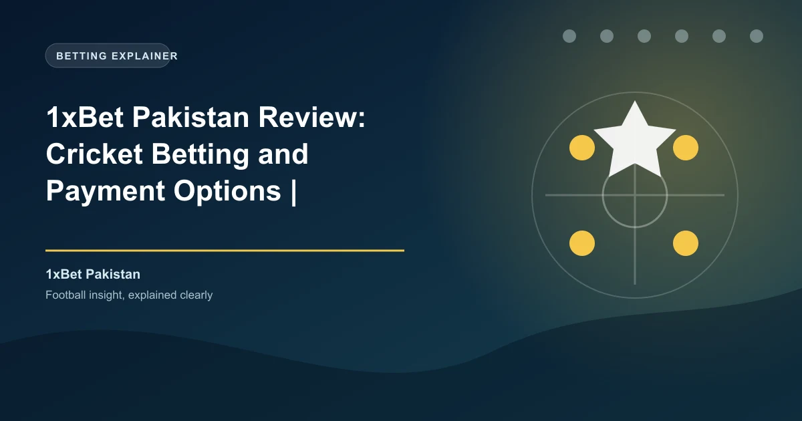

Pakistan is one of the world's most cricket-obsessed nations, with an estimated 100 million cricket fans and a rapidly expanding online betting market. Despite the cultural passion for cricket and betting, gambling occupies a complex legal position in Pakistan. Physical gambling is explicitly prohibited, while online betting exists in a legal grey area. 1xBet has established a significant presence in Pakistan, offering Urdu language support, comprehensive Pakistan Super League (PSL) coverage, and payment methods accessible to Pakistani bettors. This review covers everything Pakistani bettors need to know.
Pakistan's gambling laws are primarily governed by the Penal Code of Pakistan, which prohibits "common gaming houses" and gambling in public places. The Betting Act of 1853, inherited from British colonial rule, and the Public Gambling Act provisions within the Penal Code criminalize operating and visiting physical gambling establishments.
However, these laws were written before the internet and do not explicitly address online gambling. There is no specific federal legislation in Pakistan that prohibits individuals from placing bets on offshore online platforms. This creates a grey area where online betting is neither explicitly legal nor explicitly illegal for individual bettors.
The Pakistan Telecommunication Authority (PTA) has the power to block websites, and some gambling sites have been blocked intermittently. However, VPN usage is widespread, and 1xBet remains accessible to most Pakistani users. The platform operates under its international Curaçao eGaming license and does not hold a Pakistani gambling license.
Physical gambling is prohibited in Pakistan under the Penal Code. Online betting exists in a legal grey area with no specific legislation addressing individual online bettors. 1xBet does not hold a Pakistani license. Pakistani bettors should understand the legal landscape and use the platform at their own discretion. The legal framework may evolve as Pakistan's digital economy develops.
1xBet Pakistan offers one of the most generous welcome bonuses in the Pakistani market. New players can claim a 100% first deposit bonus up to 70,000 PKR.
| Detail | Value |
|---|---|
| Welcome Bonus | 100% first deposit bonus |
| Maximum Bonus | 70,000 PKR (~$250 USD) |
| Minimum Deposit | 300 PKR |
| Wagering Requirement | 5x in accumulator bets |
| Minimum Odds per Leg | 1.40 |
| Minimum Selections | 3 per accumulator |
| Validity Period | 30 days from registration |
The 300 PKR minimum deposit makes 1xBet accessible to casual Pakistani bettors. The 100% match doubles your starting bankroll, giving you 600 PKR to bet with from a 300 PKR deposit. The 70,000 PKR maximum bonus is among the highest available to Pakistani bettors and provides substantial extra value for high-volume cricket punters.
To claim the bonus, register a new account, select the welcome bonus during registration, and deposit at least 300 PKR via Visa, Mastercard, Skrill, Neteller, or cryptocurrency. The bonus is credited instantly and must be wagered through accumulator bets with at least three selections at minimum odds of 1.40 per leg within 30 days.
Beyond the welcome offer, 1xBet Pakistan runs cricket-specific promotions during the Pakistan Super League (PSL) season, including free bet offers, accumulator boosts tied to PSL matches, and cashback promotions on losing cricket bets. The platform also offers regular promotions during ICC events like the Cricket World Cup and T20 World Cup.
1xBet Pakistan supports a range of payment methods suitable for the Pakistani market. While local mobile payment integration is limited compared to markets like Bangladesh or Kenya, the platform offers reliable international options and strong cryptocurrency support.
1xBet Pakistan supports deposits in Bitcoin, Ethereum, USDT, Tron, Litecoin, and over 40 additional cryptocurrencies. Crypto deposits are processed instantly with no fees from 1xBet's side. Given Pakistan's State Bank of Pakistan restrictions on international gambling transactions through traditional banking channels, cryptocurrency is a particularly important deposit method for Pakistani bettors. It bypasses banking restrictions and provides a reliable way to fund betting accounts.
The State Bank of Pakistan (SBP) has issued guidelines restricting the use of Pakistani bank cards and accounts for international gambling transactions. This makes cryptocurrency a critical deposit method for Pakistani bettors, as it operates outside traditional banking channels. USDT (Tether) is particularly popular among Pakistani bettors due to its price stability and widespread acceptance.
1xBet Pakistan processes withdrawals through several methods:
| Method | Minimum Withdrawal | Processing Time |
|---|---|---|
| Skrill | 300 PKR | 15 minutes |
| Neteller | 300 PKR | 15 minutes |
| Visa (Fast Withdrawal) | 300 PKR | 15 minutes - 7 days |
| Cryptocurrency | 300 PKR (equivalent) | 15 minutes |
| Bank Transfer | 1,000 PKR | 1-7 business days |
1xBet charges no internal withdrawal fees. E-wallet and cryptocurrency withdrawals are typically processed within 15 minutes, making 1xBet one of the fastest-paying options for Pakistani bettors. KYC verification is required before the first withdrawal and involves submitting a government-issued ID (CNIC, passport, or driver's license) and proof of address.
Cricket is the overwhelming focus of 1xBet's Pakistani operation, and the platform delivers exceptional depth in cricket markets. For Pakistani bettors, the Pakistan Super League (PSL), ICC events, and international bilateral series generate the most betting interest.
The Pakistan Super League (PSL) is Pakistan's premier T20 franchise cricket league and the most important domestic tournament for Pakistani bettors. 1xBet offers comprehensive PSL coverage with 100+ markets per match, including match winner, top batsman, top bowler, total sixes, total fours, player of the match, powerplay score, and over/under totals. The platform also provides PSL-specific promotions and enhanced odds during the tournament season. All six PSL franchises - Karachi Kings, Lahore Qalandars, Islamabad United, Peshawar Zalmi, Quetta Gladiators, and Multan Sultans - are covered with full market depth.
The live betting section at 1xBet Pakistan is extensive, with thousands of live events available daily. Cricket live betting is particularly popular, with ball-by-ball markets available for PSL, IPL, and international matches. The live interface provides real-time score updates, statistical overlays, and dynamic odds.
1xBet offers live streaming on select events for registered users with a positive account balance. While not every match is streamed, the coverage includes thousands of events monthly across cricket, football, tennis, and basketball. The cash-out feature is available on both pre-match and live bets, allowing Pakistani bettors to secure profits before events conclude.
1xBet supports Urdu language on its website and mobile app, making it accessible to Pakistani bettors who prefer to bet in their native language. The Urdu interface covers all betting markets, account management, deposit and withdrawal pages, and customer support. This localization is a significant advantage over competitors who only offer English interfaces.
Customer support is available in both Urdu and English, and the team is knowledgeable about Pakistani payment methods, cricket betting markets, and the local regulatory landscape.
1xBet offers a dedicated mobile app for Android devices, available as a direct APK download from the 1xBet Pakistan website. The app is lightweight and optimized for the Android devices commonly used in Pakistan, including budget smartphones from Samsung, Xiaomi, and local brands.
The mobile app provides full access to all betting markets, live streaming, cash-out, deposits and withdrawals, and Urdu language interface. Given that mobile betting accounts for the vast majority of all online wagers in Pakistan according to Statista, the app's performance is critical. The app supports biometric login and works efficiently on both WiFi and mobile data connections.
1xBet Pakistan provides 24/7 customer support through multiple channels:
According to Trustpilot, 1xBet's customer support ratings vary, with positive reviews highlighting live chat speed and cricket market knowledge, and negative reviews focusing on withdrawal verification delays.
1xBet provides responsible gambling tools including deposit limits, session time limits, self-exclusion, and reality checks. However, as an offshore Curaçao-licensed operator with no Pakistani license, 1xBet is not subject to any Pakistani responsible gambling regulations. There is no national self-exclusion registry in Pakistan.
Pakistani bettors should take personal responsibility for managing their gambling activity. The ease of cryptocurrency and e-wallet deposits can make impulsive betting a real risk. Setting deposit limits from the start and being mindful of the total amount wagered is strongly recommended.
Registration on 1xBet Pakistan is quick and can be completed in under two minutes:
You must be at least 18 years old (the minimum gambling age in Pakistan) and complete KYC verification before your first withdrawal. KYC requires a government-issued ID (CNIC, passport, or driver's license) and proof of address.
1xBet offers a compelling product for Pakistani bettors who are comfortable with the offshore licensing arrangement. The comprehensive PSL and ICC cricket coverage, Urdu language support, and generous 100% welcome bonus up to 70,000 PKR make it one of the most Pakistan-friendly offshore platforms available. The Skrill, Neteller, and cryptocurrency deposit options provide reliable ways to fund accounts despite State Bank of Pakistan restrictions.
The primary concerns are the legal grey area and the occasional PTA website blocks. Pakistani bettors should understand the regulatory landscape and accept the limitations of using an offshore platform. For cricket enthusiasts who want comprehensive PSL and ICC market coverage with Urdu support, 1xBet delivers strong value with the caveat that regulatory protections are limited.
Ready to bet? Check our free daily cricket predictions for value bets across the PSL, IPL, and international fixtures.